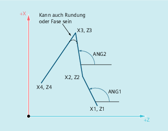

| Hinweis |
|
In der folgenden Beschreibung wird von davon ausgegangen, dass:
|
Der Endpunkt der ersten Geraden kann durch Angabe der kartesischen Koordinaten oder durch Angabe der Winkel der beiden Geraden programmiert werden. Der Endpunkt der zweiten und dritten Geraden muss immer kartesisch programmiert werden. Der Schnittpunkt der Geraden kann als Ecke, Rundung oder als Fase ausgeführt werden.
ANG1: | Winkel der ersten Geraden |
ANG2: | Winkel der zweiten Geraden |
X1, Z1: | Anfangskoordinaten der ersten Geraden |
X2, Z2: | Endpunktkoordinaten der ersten Geraden bzw. |
X3, Z3: | Endpunktkoordinaten der zweiten Geraden bzw. |
X4, Z4: | Endpunktkoordinaten der dritten Geraden |
| Hinweis |
Die hier für einen 3-Punkt-Konturzug erläuterte Programmierung kann für Konturzüge mit mehr als drei Punkten beliebig fortgesetzt werden. |
Syntax
Programmierung des Endpunkts der ersten Geraden durch Angabe der Winkel
Ecke als Übergang zwischen den Geraden:
| ANG=… | |
| X… Z… ANG=… | |
| X… Z… |
Rundung als Übergang zwischen den Geraden:
| ANG=… RND=... | |
| X… Z… ANG=… RND=... | |
| X… Z… |
Fase als Übergang zwischen den Geraden:
| ANG=… CHR=... | |
| X… Z… ANG=… CHR=... | |
| X… Z… |
Programmierung des Endpunkts der ersten Geraden durch Angabe der Koordinaten
Ecke als Übergang zwischen den Geraden:
| X… Z… | |
| X… Z… | |
| X… Z… |
Rundung als Übergang zwischen den Geraden:
| X… Z… RND=... | |
| X… Z… RND=... | |
| X… Z… |
Fase als Übergang zwischen den Geraden:
| X… Z… CHR=... | |
| X… Z… CHR=... | |
| X… Z… |
Bedeutung

| Hinweis |
Weiterführende Informationen zur Programmierung einer Fase oder Rundung siehe " Fase, Rundung (CHF, CHR, RND, RNDM, FRC, FRCM) ". |
Beispiel
| Programmcode | Kommentar |
|---|---|
| N10 X10 Z100 F1000 G18 | ; Anfahren der Startposition |
| N20 ANG=140 CHR=7.5 | ; Gerade mit Winkel- u. Fasenangabe |
| N30 X80 Z70 ANG=95.824 RND=10 | ; Gerade auf Zwischenpunkt mit Winkel- u. Rundungsangabe |
| N40 X70 Z50 | ; Gerade auf Endpunkt |